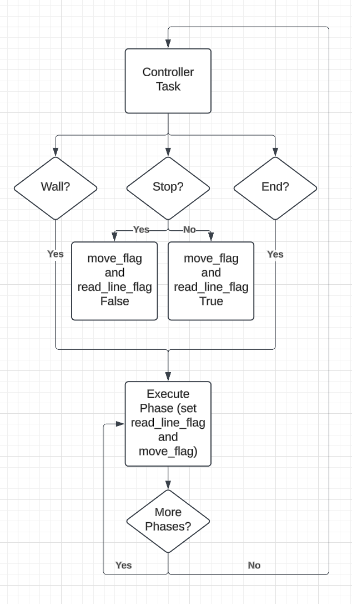
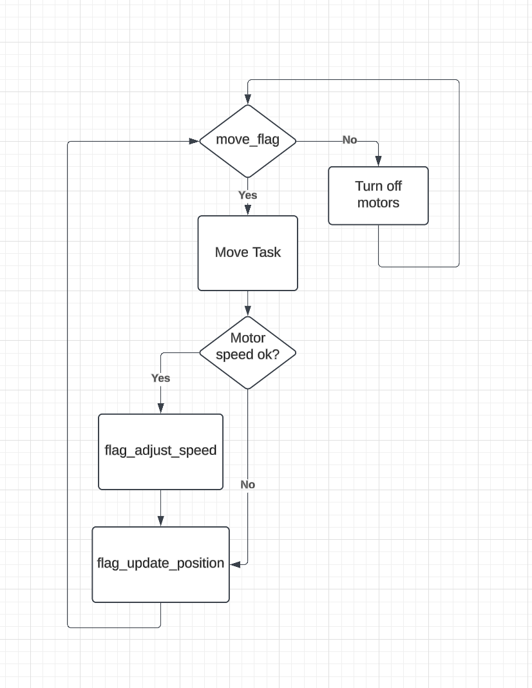
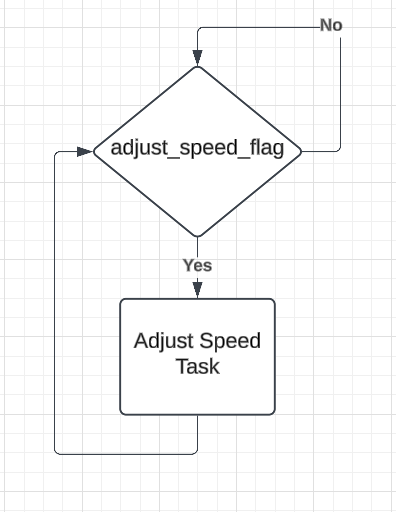
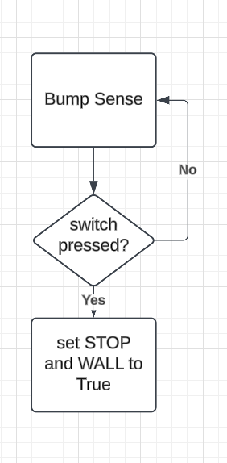
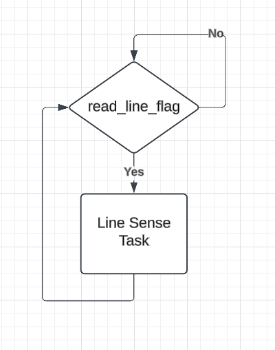

Task Manager Class
Tasks are created and managed by a TaskManager class. The class takes in 2 motors, 2 encoders, and an IMU. This way, the TaskManager can directly access the Romi’s sensors without having to pass them through queues or shares. When a TaskManager is initialized, it creates each task listed above and adds it to the scheduler. The tasks are run with a priority scheduler when TaskManager.run_tasks() is called.
Task Priorities and Periods
Calculating the priority and period of each task was mostly trial and error.
| Task Name | Period (ms) | Priority |
|---|---|---|
| task_controller | 40 | 5 |
| task_move | 25 | 6 |
| task_adjust_speed | 20 | 7 |
| task_update_position | 10 | 0 |
| task_read_line | 30 | 8 |
| task_bump | 30 | 8 |
Scheduling and Unscheduling Tasks
TaskManager uses flags to simulate scheduling and unscheduling tasks. Each task is a generator function with two while loops. The outer loop is an infinite loop that yields whenever the function is called. The inner while loop contains the task code and only runs when that task’s flag is set. If the flag is not set, the generator function skips the code in the inner loop and yields immediately, effectively “unscheduling” the task.
| Task Name | Flag |
|---|---|
| task_controller | N/A |
| task_move | move_flag |
| task_adjust_speed | adjust_speed_flag |
| task_update_position | update_position_flag |
| task_read_line | read_line_flag |
| task_bump | N/A |
Task Control Flow Diagrams
Controller

Move

Adjust Speed

Bump Sense

Line Sense

Generated by